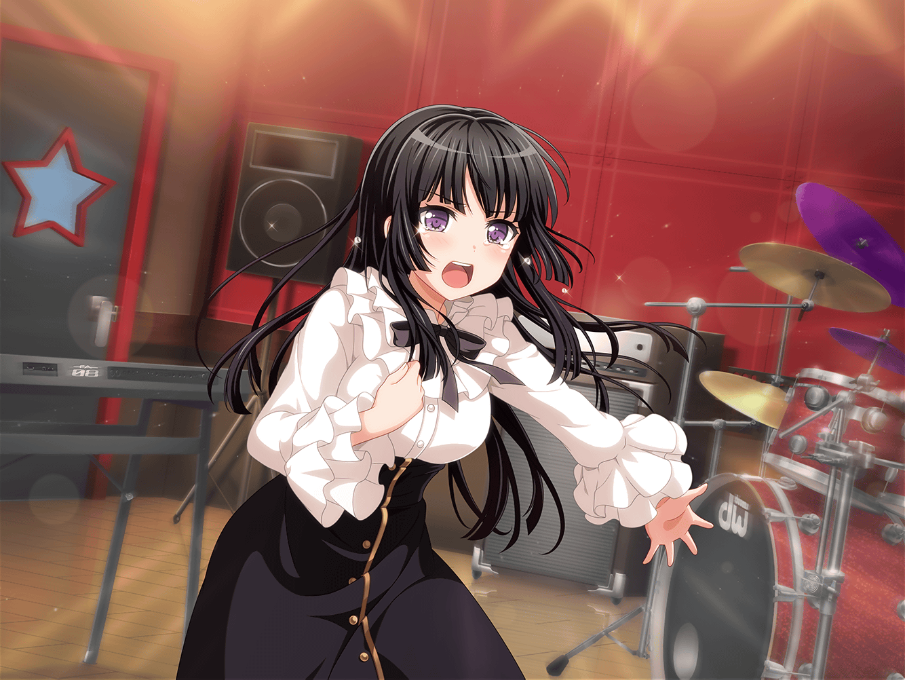

翌日
スタジオ
友希那
……あこ！
またテンポが乱れているわよ
あこ
……ごめんなさい……
友希那
前回もそれぞれつまずいた箇所を克服しておくようにと
言ったはずなのに、何度も同じことを言わせないで
リサ
ま、まあまあ！
ちょっと今回の練習には間に合わなかったかもだけどさ、
ダメなら練習すればいいじゃん？
リサ
あんまり焦ってもいいことないし、
友希那もそこまで言わなくても……
友希那
……では、もう一度同じところから
あこ
……何度やったって、できないと思います
紗夜
宇田川さん？
あこ
何度やったって、どうせあこ、失敗します……っ！！
だって、どうやったら上手になるのか、もうわかんないし……！
友希那
甘えたようなことを言わないで。
ダメならできるようになるまで繰り返すしかないでしょう
あこ
何のために上手になればいいんですか！？
友希那
それは……！
あこ
SMSで失敗したのに、反省会もやらないで！
みんなわけもわからないまま、ずっと練習してて……
あこ
FUTURE WORLD FES.に近づいてるのか、
遠くなってるのかもわからないし……っ！
友希那
遠のいているわよ。今のあなたは
あこ
……っ！
なんでですか！？ あこが上手じゃないからですか？
友希那
そうよ。それに、こんなことで音をあげているようじゃ
先が知れているわ
友希那
そんな甘えた様子で、このバンドにいる資格はない
あこ
……っ！！！
あこ
……こんなの……こんなの、Roseliaじゃないっ！！！！
リサ
あ、あこっ！！！
燐子
……友希那さん……
友希那
４人だけでも練習を続けましょう
燐子
どうして……あこちゃんにそんなこと……言うんですか……？
友希那
燐子……？

燐子
きっと……わたしたち……どれだけ練習したって……
音なんか……あいません……！
燐子
こんな演奏……誰も……振り向いてくれません……！
燐子
だって……誰も……みんなの音、聴いてないから……っ！！
リサ
燐子！！！
友希那
……
リサ
友希那、どうしちゃったの？
この間の練習の時から、なんかヘンだよ？
友希那
私は、Roseliaを取り戻したいだけよ
リサ
取り戻すって……どういうこと？
友希那
私達の音を取り戻したい。ただ、それだけよ
紗夜
湊さん、言っていることが不明瞭すぎます。
取り戻すとは、一体どうすれば……
友希那
Roseliaに馴れ合いは必要ない。
クッキーはもう、いらない
リサ
ちょっと待ってよ！
そんな、どうして昔に戻っちゃったみたいなこと言うの？
友希那
……そうでなければ、私達の音は取り戻せないからよ
友希那
私達、少し仲良くなりすぎてしまったんじゃないかしら
リサ
……！
紗夜
湊さん……っ！
……行ってしまったわね
リサ
……
紗夜
今井さん、大丈夫？
リサ
あ……ご、ごめん……なんか、驚いちゃって
紗夜
湊さんの言っていたこと……少しわかるような気がしました
リサ
分かる、って……？
紗夜
私達は、バンド、それから個人としても色々な経験をしました。
その結果、私個人としては成長できましたし、
バンドの空気も以前よりかなりよいものになっていると思います
紗夜
ですが……それ自体が、Roseliaにとって
大きな問題だったのでは、と思ったんです
紗夜
私達が無意識的にまとっていた張り詰めた空気が消え、
いつしか、『いい雰囲気』が音にのっていたのでは
ないでしょうか
紗夜
それによって、Roseliaのサウンドは以前と比べて
迫力が失われてしまったのかもしれません
リサ
昔の迫力を取り戻すためには、前みたいにならないと
いけないってこと……？
紗夜
……以前の私達に戻ることが正しいとは
私には思えません。ですが……
紗夜
どうすれば私達の音を取り戻せるのかは、わかりません
リサ
そんな……！
リサ
（アタシが今までやってきたことって……
もしかして、バンドにとってすごく
ダメなことだったのかな……）
リサ
……